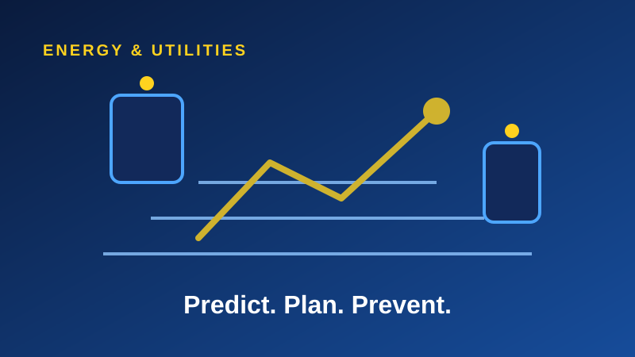

Utilities manage widely spread, high-value assets. Waiting for failures is costly and disruptive. IoT, analytics and automation shift maintenance from reactive to planned.
Know your assets
Connected sensors and energy monitoring give a live view of asset health, location and performance, replacing manual checks and guesswork.
Predict, then plan
Analytics highlight early warning signs, so crews are scheduled for the right site at the right time, with the right parts.
Report with discipline
Dashboards turn field and asset data into executive reporting, supporting investment decisions and regulatory needs.
The bottom line
Start with a high-value asset class, prove the savings, then extend across the network.